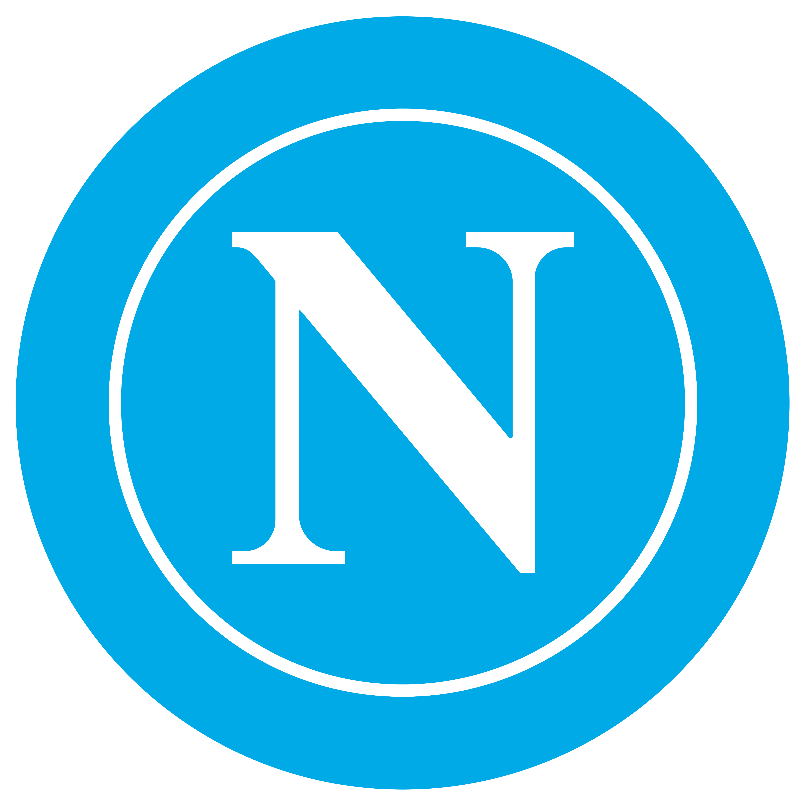
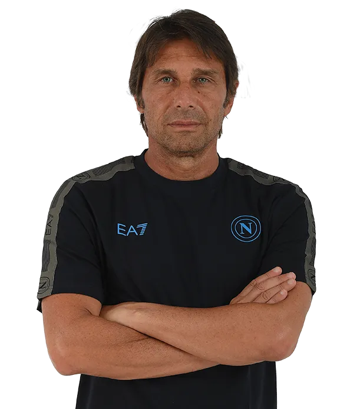
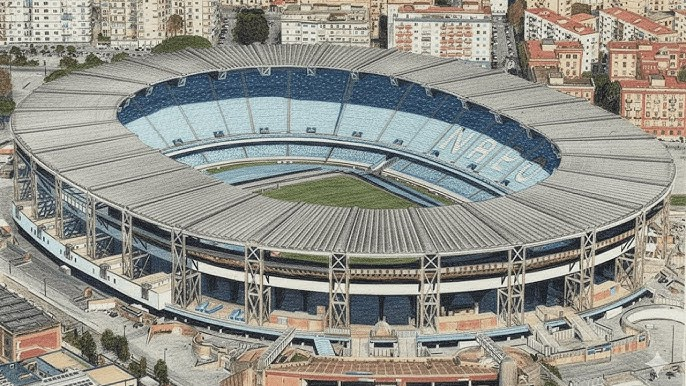

Treinador: Antonio Conte
A trajetória de Antonio Conte no Nápoles é definida por uma liderança carismática avassaladora e uma inabalável exigência competitiva, afirmando-se como um treinador de perfil ultra-intenso, pragmático e de um rigor tático obsessivo.

Estádio: Diego Armando Maradona
A imponência do Estádio Diego Armando Maradona é definida por uma herança identitária mítica e uma paixão popular avassaladora, afirmando-se como um palco de perfil sagrado, intemporal e artisticamente imortal.

Estilo de Jogo:
O estilo de Antonio Conte no Nápoles reflete a sua maturidade através de uma maior flexibilidade tática. Embora associado ao rígido sistema de três centrais, o técnico adaptou a equipa sem abdicar da sua habitual intensidade física e do foco obsessivo na vitória.
"Forza Napoli Sempre!"